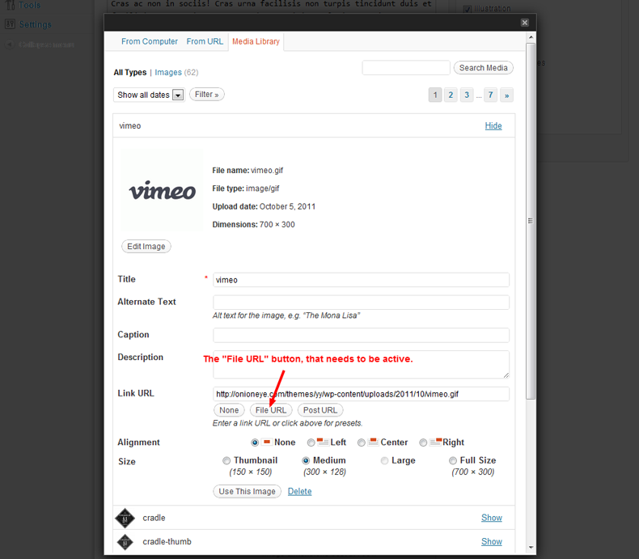

Created: 12/11/2011
By: onioneye
Theme Link
Thank you for purchasing my theme. If you have any questions that are beyond the scope of this help file, please feel free to email me via my user page contact form here. Thanks so much!
To install the Yin & Yang theme, you first need to upload the theme files and then activate the theme itself. The theme files can be uploaded in two ways:
If you need help installing WordPress, follow this link: http://codex.wordpress.org/Installing_WordPress
In order to set up your homepage, you first need to make a new page, by navigating to the Pages » Add New tab. Once there, assign a title to the page, while not including any content in the content editor. Select the "Home" template in the "Page Attributes" settings box, and click "Publish".
Once you have made your homepage, navigate to the Settings » Reading tab, where you will find an option called "Front page displays". Select the static page sub-option and choose the page you just created as your front page.
Your homepage is now created and can be viewed by visiting the page you just published. You can also further configure it by going to the options panel, which is found under the Appearance » Theme Options tab.
If you wish to have a blog page, navigate to the Pages » Add New tab in your WordPress admin panel. Once there, assign a title to the page, while not including any content in the content editor. After you are done with that, click "Publish".
Once you have made your blog page, navigate to the Settings » Reading tab, where you will find an option called "Front page displays". Select the static page sub-option, if it's not selected already, and choose the page you just created as your posts page.
Your blog page is now created and can be viewed by visiting the page you just published. You can also further configure your blog by going to the options panel, which is found under the Appearance » Theme Options tab.
To properly create a portfolio item, you first need to create a new category for the item, by navigating to the Portfolio » Categories tab in your WordPress admin menu. Please do remember that you can assign as many categories as you want to the item, but it needs to have at least one category, or it will not be filtered properly.
To add a new portfolio item, navigate to the Portfolio » Add New tab. Here you can add a brief description of the item in the content editor, assign categories to the item in the "Categories" post option box, upload images, embed videos, and add additional information, such as the name of the client and the URL of the project.
All of the images can be set in the "Image Settings" box. Each item requires a preview image, and at least one, and a maximum of ten additional images, to work properly. The ten additional images are displayed in the slider, when a portfolio item is active/opened.
To upload your images, you will need to click the "Browse" buttons, and choose "Use This Image", to set the selected/uploaded image. You can always remove the selected images by clearing the fields where their links are embedded, or by clicking the browse button and replacing the image with another one.
Things to look out for, when adding the images
The dimensions of the preview image need to be at least 220 x 175. If the image is larger, it will be resized to fit the mentioned dimensions. The rest of the portfolio images should be at least 700 pixels wide, with any height.
When you are setting the images, you need to make sure that the "File URL" button is selected. Hint: you only need to click the mentioned button once, and it will be active for all other images.
Screenshot of the "File URL" button:

To add a video, follow the steps above for adding a preview image, because every item requires one. To add the video itself, simply copy and paste the provided embed code in the "Video Settings" box. You can add videos from sites such as YouTube, Vimeo, and other sites as well. The best dimensions for the video are 700px x unlimited.
To find out what sites you can embed from, visit the following link: http://codex.wordpress.org/Embeds#Okay.2C_So_What_Sites_Can_I_Embed_From.3F
WordPress’s Navigation Menus feature allows you to create a navigation menu of pages, categories, custom links, tags, etc. that is presented to your visitors. Below is a link to WordPressʼs documentation on their navigation menus feature: http://codex.wordpress.org/Appearance_Menus_SubPanel.
This theme supports one menu, found in the top-left corner of your website, which serves as the site's main navigation. Another thing to keep in mind is that the menu supports two levels of hierarchy, meaning that you can have top-level navigation links and one level of drop-down links, within the top-level links.
If you need any further info on the navigation menus feature, please visit the link provided above.
Your theme comes with a theme options panel, which is packed with a lot of useful options, that let you easily customize the theme, without having to manually change anything in the source files. The options panel is found under the Appearance » Theme Options tab of your WordPress admin panel menu.
Your theme contains six widget areas. Each of the areas of the theme, where the widget areas are displayed, can be disabled in the theme options panel.
Your theme comes with four custom widgets:
The last widget (the text widget) is already built into the theme by default in WordPress, so you can use it simply by dragging it into one of the widget areas. All you need to do to embed something is to post the URL to it into the content area of the widget. Make sure that the URL is on its own line and not hyperlinked (clickable when viewing the post). For example:
Check out this cool video: http://www.youtube.com/watch?v=nTDNLUzjkpg That was a cool video.
WordPress will automatically turn that into a YouTube embed when the post is viewed. (Check the “Auto-embeds” check box in Administration > Settings > Media SubPanel.). You can also opt to wrap the URL in the [embed] shortcode. It will accomplish the same effect, but does not require the URL to be on its own line and the “Auto-embeds” setting to be enabled. It also allows you to set a maximum (but not fixed) width and height, like so: [embed width="123" height="456"]...[/embed]
This theme comes with 22 column shortcodes:
You can combine these column shortcodes to make up rows of columns that will fill up the whole width of the box, which contains these columns.
For example, you can combine the following shortcodes that will, when their values in their names are added up, make up a fractional number that should always be equal to one: three_fifth (3/5) + one_fifth (1/5) + one_fifth_last (1/5) = 5/5 = 1. It’s important to remember that the last column in the row has to have a suffix of “_last” or it will fall onto the next row, making it display improperly.
The widths of the columns are defined as percentages, making them highly flexible, so you can use them anywhere, no matter what the width of the box, into which you are putting your column shortcodes, is.
Here’s a few snippets depicting the use of the column shortcodes.
[one_half] Your content goes here..... [/one_half] [one_half_last] Your content goes here..... [/one_half_last]
[one_third] Your content goes here..... [/one_third] [one_third] Your content goes here..... [/one_third] [one_third_last] Your content goes here..... [/one_third_last]
[one_fourth] Your content goes here..... [/one_fourth] [one_fourth] Your content goes here..... [/one_fourth] [one_fourth] Your content goes here..... [/one_fourth] [one_fourth_last] Your content goes here..... [/one_fourth_last]
Your theme also comes with three additional shortcodes: the contact form shortcode, google maps shortcode, and the contact info shortcode. Below are the instructions on how to use each one of these.
Note: attributes marked as mandatory must be included in the shortcode, or else the shortcode will not work properly.
Available attributes and their default values:
[contact_form email="zlatan@onioneye.com"]
Available attributes and their default values:
[contact_info name="Zlatan Halilovic" address="ul.Mahmuta Busatlije br.4" city="Tuzla" state="BiH" phone="(555) 216-4404" zip="75 000" email="zlatan@onioneye.com"]
Available attributes and their default values:
[gmap width="400" height="200" zoom="18" address="Kraków, Poland"]
[gmap width="680" height="300" zoom="11" marker_address="San Francisco, California"]
[gmap width="680" height="300" zoom="13" marker_latitude="37.7914434" thmarker_longitude="-122.389913" marker_title="_latlng"]
This theme has a fixed layout and relies on the 960gs framework to layout the columns throughout the site.
Three CSS files are used in this theme:
This theme imports the following JavaScript files:
Eight psds are included with this theme. All of them can be found inside the “psd” folder, which is contained in the folder you downloaded from ThemeForest. The following are the names of the psd files and their short descriptions:
Your theme comes with a built-in image resizing script called “TimThumb”. This script handles the automatic resizing of images throughout your theme. If you’re are having trouble with the script, for instance, if images you have defined for your portfolio gallery aren’t loading, go through the following troubleshooting tips:
1). Does your cache folder have the correct permissions?
You need to give your: /wp-content/themes/yin_and_yang/cache/ folder full permissions. In most cases this is “777”, but it may vary depending on where you are hosted. If 777 does not work, try 755. It is recommended that you contact your host, to find out what permissions to use, if you are not sure. Setting permissions is also known as CHMODing, and can be done using most FTP programs and hosting control panels.
2). Does the file “timthumb.php” have the correct permissions?
Make sure the following file has the correct permissions needed for your server: /wp-content/themes/yin_and_yang/timthumb.php. In most cases this is “644”, but it may vary depending on where you are hosted. If 644 does not work, try 755 or 777.
3). Does your server has the GD library compiled with its version of PHP?
This script requires the GD library to be installed. If your thumbnails are not working, check with your host to make sure that you have it.
4). Does your server has mod_security settings that are impeding the scripts functionality?
Some servers may have mod_security settings that will stop the script from working. You should always contact your host to make sure your server is not holding the script from working.
Your theme comes with a file, which is updated whenever you change something in the theme options panel, that is related to the CSS of the theme. If you do not see any changes to the theme when you update something under the “Styling Options” tab, in the options panel, check if the following file has the correct permissions:
You need to give this file full permissions. In most cases this is “777” but it may vary depending on where you are hosted. If 777 does not work, try 755.
The theme doesn’t contain the .pot, .po, or .mo files, but all the text that needs to be translated is properly wrapped in the following translation functions: __, _e, _x, and _n, so you can easily translate the theme using a tool like poEdit.
Here’s a link to a post that explains how to translate your WordPress theme: http://urbangiraffe.com/articles/translating-wordpress-themes-and-plugins/. Follow its instructions, and you should have the translation files for your theme ready in no time.
The following files are used as listed:
Once again, thank you so much for purchasing this theme. As I said at the beginning, I’d be glad to help you if you have any questions relating to this theme. No guarantees, but I’ll do my best to assist. If you have a more general question relating to the themes on ThemeForest, you might consider visiting the forums and asking your question in the “Item Discussion” section.
OnionEye